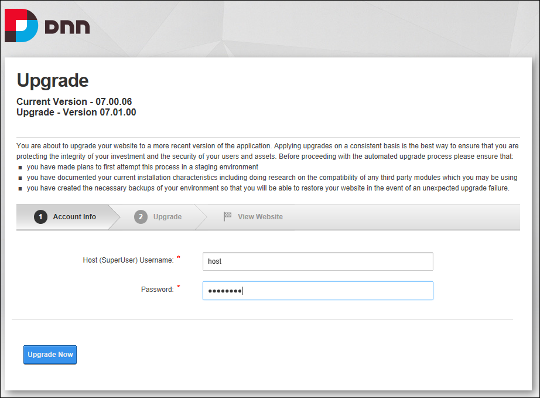

Using the DNN Upgrade Wizard
How to upgrade your current DNN installation to the latest version of DNN using the DNN Upgrade Wizard. You can download this wizard from the dnnsoftware.com website.
Tip: SuperUsers can schedule DNN to regularly check for upgrades. See "Checking for DNN Framework Upgrades"
- Create a backup of your database and files.
- Unzip the DNN upgrade file that will be named something similar to "DotNetNuke_Community_7.1.0_Upgrade.zip"
- Copy the unzipped files on to your web server, choosing to copy and replace any existing files.
- Navigate to the home page of your site. This will trigger the upgrade process and display the DNN Upgrade Page.
- At Choose Your Language, select the language for the installer. English, Dutch, French, German, Italian and Spanish languages are included. The Installer will be displayed in the language that is set as the default on your website browser, otherwise it will default to English if no language is set.
- In the Host (SuperUser) Username text box, enter the username of the host account.
- In the Password text box, enter the password for the host account.

- Click the Upgrade Now button. The Upgrade Status Report will now start running. The Upgrade Complete message is displayed once the process is completed.
- Click the Visit Website to go to your upgraded site.